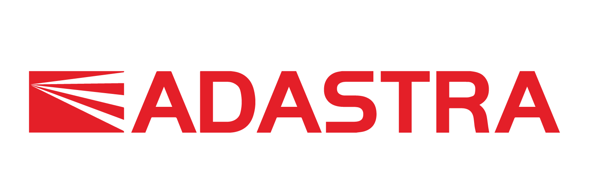
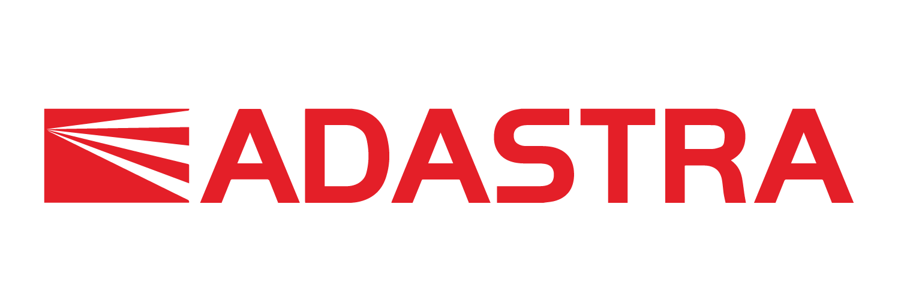

S námi tě čeká týden plný programování, kódování a grafiky
Programuj, kóduj, vytvoř si vlastní blog nebo hru. Zkus to s námi a vytvářej nové věci, nové aplikace. S technologiemi můžeš změnit svět. Programování se dá naučit. Nemusíš být génius, abys uměla programovat. Stačí mít přesvědčení, motivaci a píli se učit. Začni tvořit hned.
O co tedy jde?
Přemýšlíš jaký obor studia zvolit po střední škole? Na jakou vysokou školu se přihlásit? Zkus s námi objevit informační technologie jinak, než je jako uživatel znáš. Během jednoho týdne ti ukážeme jak vklouznout do světa IT, co to všechno vlastně znamená a jak to chodí v praxi. Naučíme tě základy tvorby webu, programování i grafiky. Pojď do toho s námi a přesvěč se, že IT není jen pro kluky.

Během jediného týdne tě na Letní škole naučíme:
- Jak vytvořit webové stránky pomocí HTML a CSS
- Jak pracovat s vektorovými křivkami a tvořit s grafickými programy
- Jak programovat a vytvořit si vlastní aplikaci
Že jsi začátečník a HTML, CSS ani programovací jazyk ti nic neříká? Nevadí! Kurz probíhá pro úplné začátečnice. Probíranou látkus tebou projdeme postupně pěkně od začátku a podle tvého tempa.
Co tě ještě čeká?
- V praxi si vyzkoušíš celou řadu technologií. Minulý rok jsme si třeba hrály s LEGO roboty.
- Podíváš se na místa, kde to IT žije a do prostor našich partnerů z oboru.
- V rámci kurzu poznáš spoustu zajímavých lidí, kteří tě nechají nakouknout do zákulisí toho, jak to chodí ve velkých IT společnostech. Na loňském ročníku jsme přivítaly třeba vývojářku ze Skype nebo zástupce vývojářů z Microsoftu.
- A hlavně potkáš partu dalších 30 zapálených slečen, které mají zvědavost a motivaci se do IT vrhnout po hlavě stejně jako ty.
- Čeká nás spousta práce. Ale bude to stát za to!
Důležité informace
| Kdy je Letní škola IT? | 8.12.2016 - 12.8.2016 |
| Kde se to koná? | ČVUT v Praze, Fakulta informačních technologií, Thákurova 9, Praha 6 |
| Kolik stojí? | Jen 1200 - 1250 Kč (dle platební metody) na celý týden. Cena zahrnuje oběd, občerstvení v průběhu dne, zábavu na celý týden, milion zkušených lektorů, spoustu nových znalostí a zajímavých exkurzí. |
| Jak mohu platit? | Kartou online nebo převodem na účet. Vše se dozvíš v přihlašovacím formuláři. |
| A co ubytování a jídlo? | V rámci podpory partnera ČVUT je možné zajistit ubytování na vysokoškolských kolejích. Stačí nám dát vědět v přihlašovacím formuláři. |
Informace pro rodiče
Letní škola je koncipována jako příměstský tábor s pevným programem od 8:30 do 18:00. Součástí programu budou teoretické přednášky i workshopy, kde si holky samy vše vyzkouší, interaktivní hry, exkurze v rámci ČVUT a Microsoftu a motivační vstupy úspěšných žen v IT. Nad rámec pevného programu nabízíme zejména pro mimopražské účastnice večerní zábavné aktivity. (+ jídlo)
Je zajištěno stravování?
Ano, pro účastníky je zajištěna snídaně, oběd i večeře a dále občerstvení v průběhu dne. (vynechala bych bčerstvení) V případě alergií nebo speciálních diet dokážeme zajistit i alternativní stravu, je však třeba uvést specifické nároky do registračního formuláře.
Moje dcera není z Prahy. Zajišťujete i ubytování?
Pro mimopražské účastnice nabízíme možnost ubytování zdarma na kolejích ČVUT, které jsou 5 minut chůze od přednáškových prostor. Stačí nám do registračního formuláře uvést, že máte o ubytování zájem.
Jak budou dívky trávit čas mimo hlavní program?
Pro dívky, které ubytujeme na kolejích zajišťujeme také večerní volné aktivity po hlavním programu: hry, sportovní a kulturní aktivity aj. Tento program a noční dohled na kolejích zajistí zkušený tým vedoucích.
Kdo zajišťuje program?
Přednáškovou část zajišťuje organizační tým z neziskové organizace Czechitas s pomocí lektorů, studentů informačních technologií a odborníků z praxe. Odbornou část doplňují exkurze, interaktivní hry a vstupy partnerů ČVUT a Microsoft. Na volných aktivitách se podílejí studenti pedagogických a volnočasových oborů s dlouholetou praxí. Večerní dohled je zajištěn organizací Czechitas.
Vyplnil/a jsem přihlášku a zaplatila poplatek. Potřebuju vyplnit ještě nějaké formuláře?
Kromě registračního fomuláře, který je nutný vyplnit společně s přihláškou je třeba první den donést vytisknuté a podepsané následující formuláře: potvrzení od lékaře a potvrzení o bezinfekčnosti a dobrozdání rodiče.
Mám další otázky, na koho se mohu obrátit?
Dita Přikrylová, organizátor, 777 348212, dita@czechitas.cz
Program
8.8.2016 pondělí
- 9:00 - 18:00 Vytvoříme statické webové stránky. Takovou osobní vizitku: Úvod do HTML/CSS, návrhy na osobní logo.
9.8.2016 úterý
- 9:00 - 18:00 Oživíme stránky. Přidáme jim dynamiku a logo: PHP/Ruby, Inkscape, modulární programování. A podíváme se do Institutu intermédií na ČVUT.
10.8.2016 středa
- 9:00 - 18:00 Budeme si hrát s lego roboty: základy algoritmizace.
11.8.2016 čtvrtek
- 9:00 - 18:00 Budeme programovat PC hru: základy objektově orientovaného programování, C#/.NET. A podíváme se na humanoida a 3D tiskárnu.
12.8.2016 pátek
- 9:00 - 18:00 Závěrečný hackaton. V týmech vytvoříme stránky nebo aplikaci a budeme soutěžit o ceny.
A jak to vypadalo loni?
„Letní škola mě dost posunula dopředu. Nebýt jí, tak teď nevím o spoustě příležitostech, které mám." - Natálie Toulavá
“Konečně chápu, co středoškolští učitelé učí tolik let. Z těchto zkušeností budu čerpat ještě mnoho let!“ - Bára Jiříčková
Náš tým
Dita Příkrylová, organizátor, Czechitas, 777 348212, dita@czechitas.cz
Dita se na Letní škole stará o to, že všechno šlape jak má. Zařizuje program i komunikaci s partnery a je to hlavní osoba, na kterou se můžete obracet se všemi otázkami ohledně turnusu v Praze. Ditu uvidíte v Praze po celou dobu trvání Letní školy. Kontaktovat ji můžete na: dita@czechitas.cz nebo na tel: 777 348212
Monika Malátková, organizátor, Czechitas, 733 101 468, monika@czechitas.cz
Monika zaštiťuje organizaci Letní školy v Brně. Uvidíte ji tam celý týden a můžete se na ni obracet se všemi otázkami ohledně brněnského turnusu po celou dobu trvání Letní školy. Kontaktovat ji můžete na: monika@czechitas.cz nebo na tel: 733 101 468
Naši úžasní sponzoři

 
